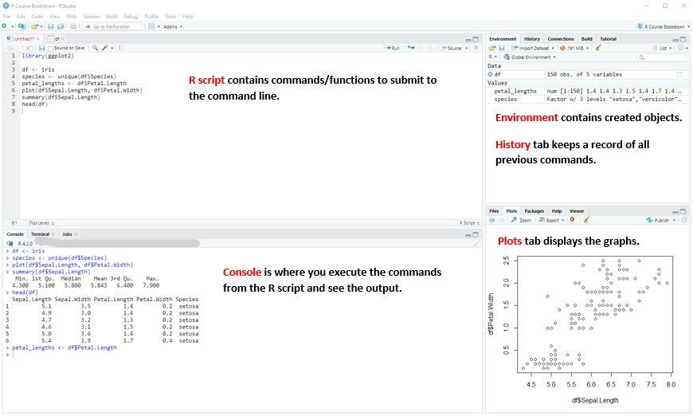
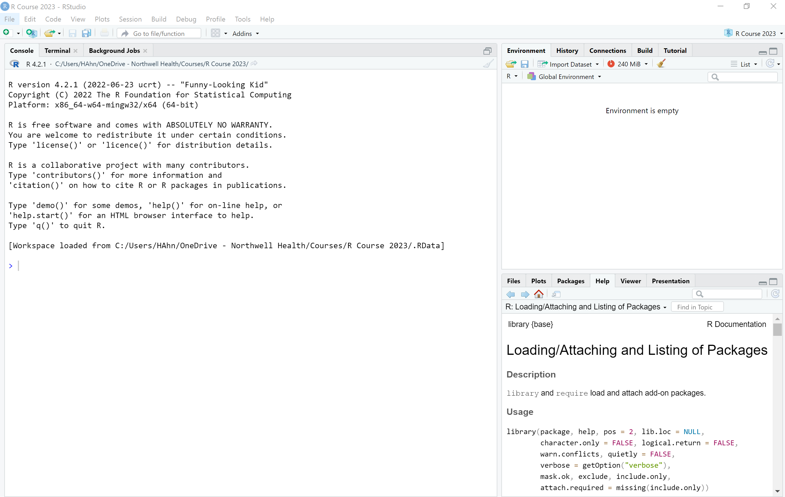
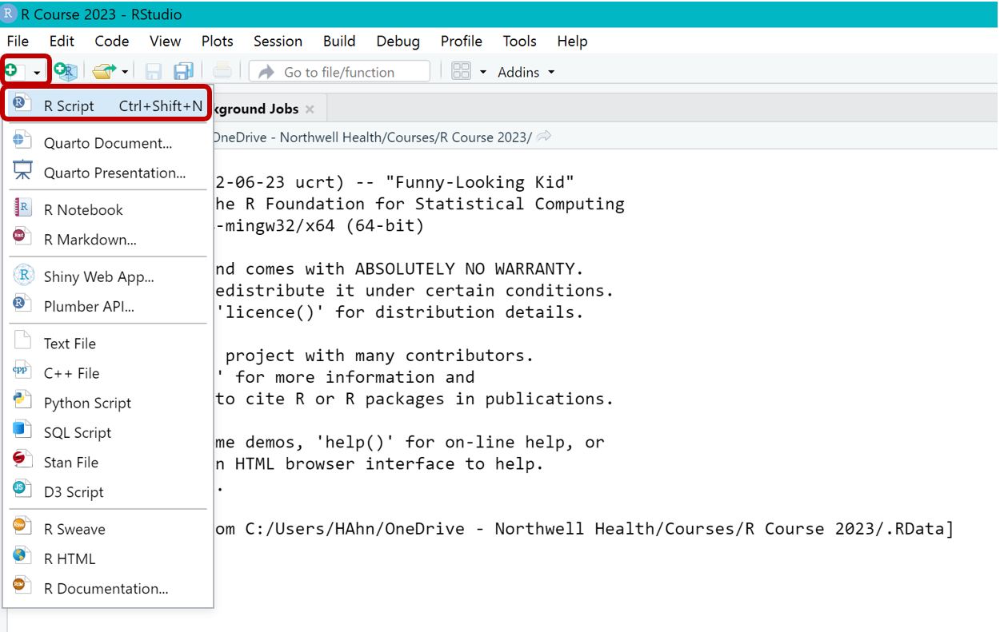
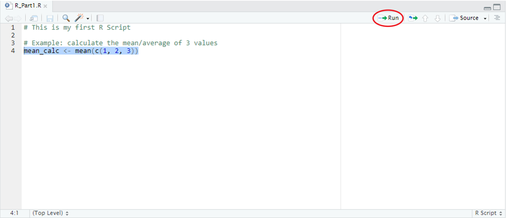
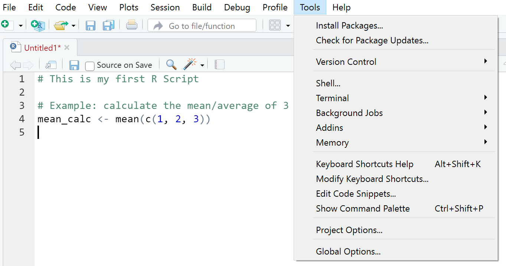
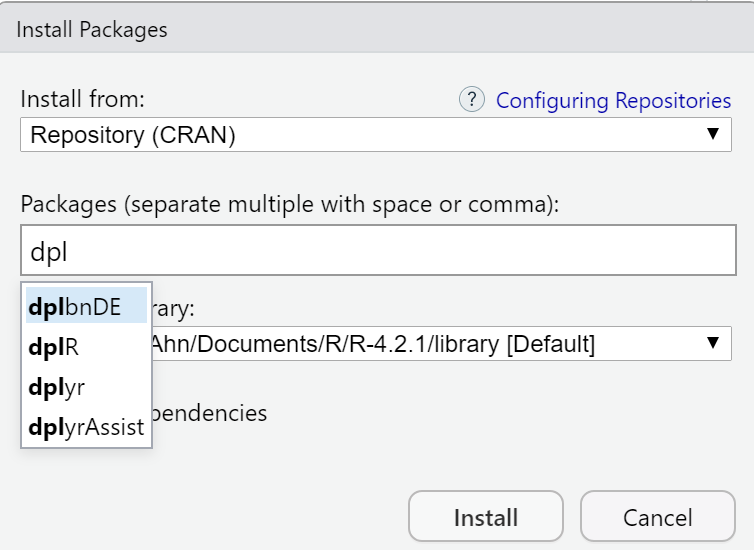
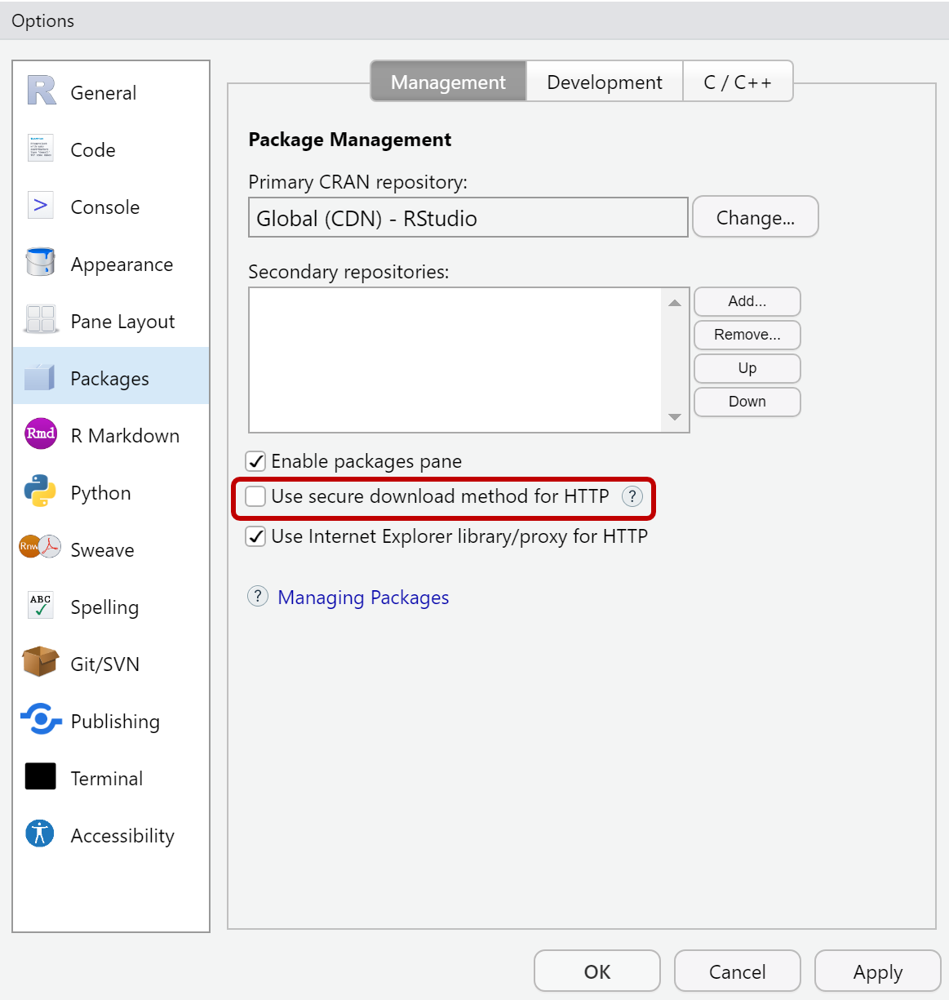
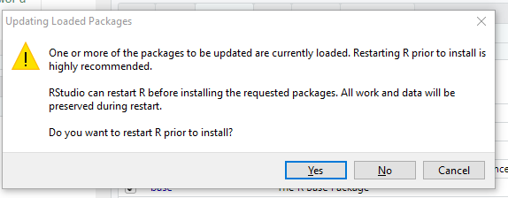
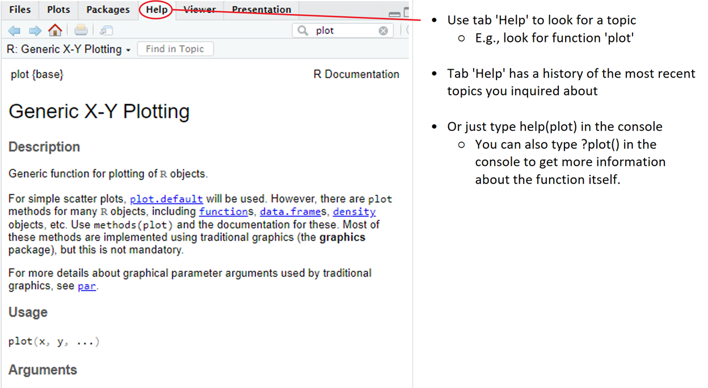

Introduction to Statistical Computing: R
February 06, 2023
Before getting started…
Why R?
- R is a FREE, open-source, statistical software
- R is one of the widely used programming languages
- A go-to language for Statistics
- Conventionally, R was mostly used in academia but with the emergence of Data Science, the need for R in industries became evident.
What is RStudio?
- Free, open-source IDE (integrated development environment) for R
- User-friendly
- Provided by Posit: https://posit.co
- Note: RStudio has been rebranded to Posit and launched their website in October 2022.
- The rebranding allowed users of the open source software for R, Python, and other coding languages.
- They have also provided more machine and deep learning packages for users!
- The rebranding allowed users of the open source software for R, Python, and other coding languages.
- Note: RStudio has been rebranded to Posit and launched their website in October 2022.
The following image below demonstrates what RStudio is consisted of:

- RStudio has recently rebranded itself as Posit.
- They advertised as providing a multi-lingual data science, open-source and commercial software for R, Python, and beyond.
- Because of this rebranding, we will be using the products that they have just recently released.
Install R and RStudio
Install R
The first thing to download and install is R through this link: https://cran.r-project.org/ (for Windows, Mac, Linux).
From the website, click on the “Download R for…” for your computer type.
- If you are using a Windows computer for this course series, click on the “base” version if you don’t have R installed already.
- If you are using a Linux computer for this course series, click on the proper version of the Linux device you have.
- If you are using a Mac computer for this course series, scroll down to “Latest release:” section and on the left-hand side, click on the most recent version of R (R-4.2.2 pkg)
- NOTE: Due to Mac’s new conversion from Intel to their M1 (and higher) devices, R now provides two separate versions of the R language based on the device type. The messages under Latest release: should be read as follows:
For those using the M1 (or higher) devices:
R 4.2.2 binary for macOS 11 (Big Sur) and higher, Apple silicon arm64 build, signed and notarized package. Contains R 4.2.2 framework, R.app GUI 1.79 for Apple silicon Macs (M1 and higher), Tcl/Tk 8.6.12 X11 libraries and Texinfo 6.8. Important: this version does NOT work on older Intel-based Macs - see below for Intel version.
For those using the Intel 64-bit devices:
R 4.2.2 binary for macOS 10.13 (High Sierra) and higher, Intel 64-bit (older Macs) build, signed and notarized package. Contains R 4.2.2 framework, R.app GUI 1.79 in 64-bit for Intel Macs, Tcl/Tk 8.6.6 X11 libraries and Texinfo 6.7.
- NOTE: Due to Mac’s new conversion from Intel to their M1 (and higher) devices, R now provides two separate versions of the R language based on the device type. The messages under Latest release: should be read as follows:
Install RStudio
- Downloading RStudio Desktop: https://posit.co/download/rstudio-desktop/
- RStudio Desktop is free to download on the posit website.
- There are more options available for purchase.
- Go to “Step 2: Install Rstudio Desktop” button. It should automatically update the button based on your computer type.
- If you would like to learn more about other options Posit provides, please click on the “Explore More” tab at the top.
- RStudio Desktop is free to download on the posit website.
Within RStudio, you will write code in the panel on the left-hand top side. To code in R, users mainly code within the RStudio software. Open up RStudio on your device. If it is your first time ever using R or RStudio, the IDE might open up with three panels, instead of four.
- Console
- Environment/History
- Files/Plots/Packages/…
Here is an example of what it may look like for you if you are opening up RStudio for the very first time:

There are multiple ways to open up the “R Script” panel or otherwise known as the Source panel by RStudio. The simplest way is to go to the icon that looks like a sheet of paper with a green plus sign on the top-lefthand corner. This button is a shortcut to help open “New File” based on the type of file you want to create. Once the list of options opens up, click on the “R Script” (this is the first option). This is illustrated below for you as a demonstration:

An alternative way to open up a new R Script file is to go to “File” tab, and then scroll to “New File”. Then, click on “R Script”. This should open a Untitled.R file for you that you can save onto your computer or OneDrive (if synced to your device). If you don’t have a code type file like the “R Script” file open, you may not see the Run button in RStudio, make sure you have this open. This file document will help you write and run R code within RStudio.
Coding in R
- How to run/execute the code…
- Highlight the code and hit the ‘Run’ button
- Highlight the lines of code or put the cursor on the line and press:
- Windows & Linux:
CTRL + ENTER - Mac:
Command + Return
- Windows & Linux:

More keyboard shortcuts here.
R Packages
- Packages are collections of R functions, data, and compiled code in a well-defined format.
- The directory where packages are stored is called the library.
- R comes with a standard set of packages. Others are available for download and installation.
- Only need to install the package one time.
- Once installed, they have to be loaded into the session to be used.
- Once installed, you need to load package whenever you need to use functions from the package.
How to install new packages through R code:
# install.packages("PUT THE NAME OF A PACKAGE INSIDE QUOTATION MARKS")
install.packages("dplyr")Alternative way to install packages involves clicking on the “Tools” tab in RStudio, and then on “Install Packages…”

This opens up a pop-up window where you can type in the various packages you want to install.

Solutions for Potential Package Installation Issues
Once you have installed R, and then RStudio, you should first try looking into whether you can load certain packages if you are working on a Windows device. One package that works best as a test case is the dplyr package. This package is used commonly among R coders to help with data cleaning and data manipulation. Try testing this following code:
"dplyr" %in% rownames(installed.packages()) # Check if you already have dplyr (TRUE/FALSE)
install.packages("dplyr") # Install dplyr if you do not already have dplyrIf you were able to install dplyr without any issue, ignore the instructions and keep reading ahead from the “Loading R Packages” section.
After running the command above, and you get a message like that below, you might have to install RTools using the following link: RTools CRAN repository.
WARNING: Rtools is required to build R packages but is not currently installed. Please download and install the appropriate version of Rtools before proceeding.
After you download and execute the RTools application, you might need to close and re-open RStudio. Once RTools has been properly installed, you will not need to open the application on your device, as it gets integrated into RStudio upon installation.
Another possible issue that could arise is that your work computer might be blocking package installation due to firewall issues. You may encounter a message along the lines of shown below:
“Installing package into ‘/usr/lib64/R/library’
(as ‘lib’ is unspecified)
— Please select a CRAN mirror for use in this session —
Error in download.file(url, destfile=f, quiet=TRUE) :
unsupported URL scheme”
If this is the message you are receiving, try running the code below:
# if working with a different package, replace "dplyr" with your package name inside quotation marks
install.packages("dplyr", dependencies = TRUE, repos = "http://cran.rstudio.com/")Instead of the warning messages above, you might also see the following message:
Warning in install.packages :
unable to access index for repository https://cran.rstudio.com/src/contrib:
cannot open URL https://cran.rstudio.com/src/contrib/PACKAGES%27
The solution to help with this is to go to “Tools” and then to “Global Options”. This should bring up a window that has a tab called “Packages”. Click on that tab, where it should open up a few checklists. If you see that the item “Use secure download method for HTTP” is checked, un-check that item and then click “Apply” and “OK” to save your preferences.

Doing so will open up RStudio to access libraries such as gtsummary and others that might have previously been blocked by the firewall when it was selected. Now try the install.package() function again and see if it works. This might prompt you to a window asking you whether you want to restart RStudio:

Select “No”. This should bring you back to RStudio and you should see that it has started the installation process. A “Stop” sign button should appear in your console next to the “broom” icon. This means that it is currently running the install.packages() code for you and that you should wait until it has finished executing the code. Once finished, you should notice that the “Stop” button has disappeared.
Loading R Packages
How to load packages through R code:
# library("PUT THE NAME OF A PACKAGE (NO NEED FOR QUOTATION MARKS)")
library(dplyr)
mutate() # Using the function from the package "dplyr"
# Using one function from a specific package, but without loading the entire package via library()
dplyr::mutate()You might have noticed that in the last line of code above, the function from a package was called using the :: notation. This is optional and mostly suggested for when you have loaded multiple packages that may have functions with the same function name. R is open-source and people can upload and publish a package they created, leading to potential overlaps as such. To make sure you are using a specific function from a specific package, this is a useful method to call a function. You also don’t have to call library() if you use the :: notation.
If you require assistance with certain packages and functions, please go to the “Help” tab as shown below:

R Syntax
The word “syntax” can be defined as the way how a code is written through combinations of symbols (much like grammar). Each coding language has a unique syntax to differentiate themselves from other languages. Here is a list of descriptions about R’s syntax:
- R is an object-oriented programming language.
- Users can define not only the type of the data structure, but also the type of functions to be applied to the data.
- R is case sensitive:
'A'and'a'are different symbols according to R. - Commands are separated by a new line (commonly by a new line).
- Commands can be grouped together (in functions) by { and }.
- Comments can be inserted almost anywhere.
- Comments are essentially notes you write for yourself and others. This is to help document your work.
- Starts with a
#, until the end of the line (single-line comment). - A quick way to comment multiple lines instead of just one, select all the lines of interest and then press:
- Windows & Linux:
CTRL + Shift + C - Mac:
Command + Shift + C
- Windows & Linux:
R Errors
Occasionally, while you run code, you may run into various types of error messages. This is typically normal, and a way for the R program to notify you that there is something in your code that prevents it from finishing to run the code. It will stop running at the source of the error in your code. The following are some of the most common error messages R users have seen:
- Syntax Errors: generated by misspelling, and extra comma, or forgetting to close a bracket.
- Semantic Errors: correct code, but the outcome is NOT what you expected.
- Logic Errors: this is the worst type of error you can see. The mistake is not in the code, but the logic of execution.
To resolve this, read the error message carefully, since R provides the line the error occurred in, and RStudio displays the line numbers in the R Script file.